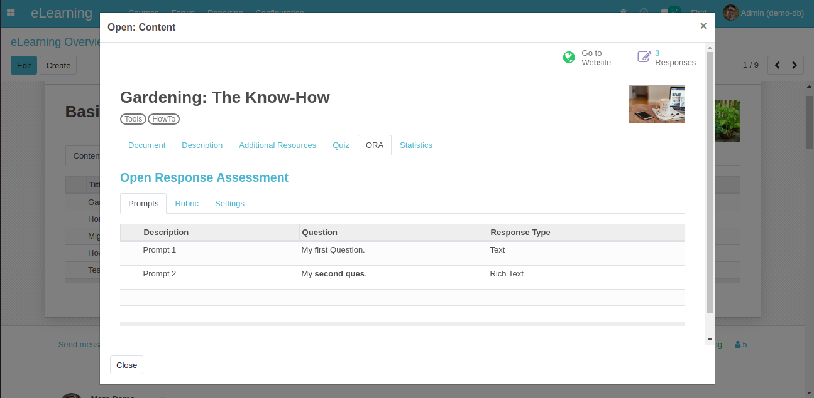
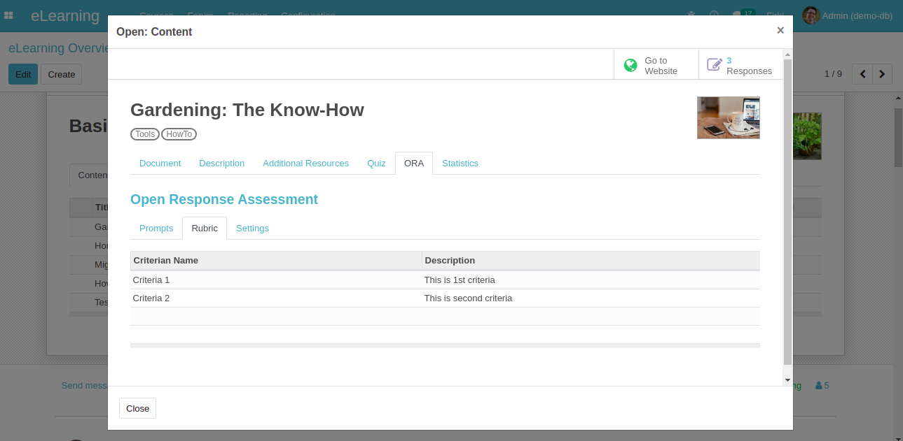
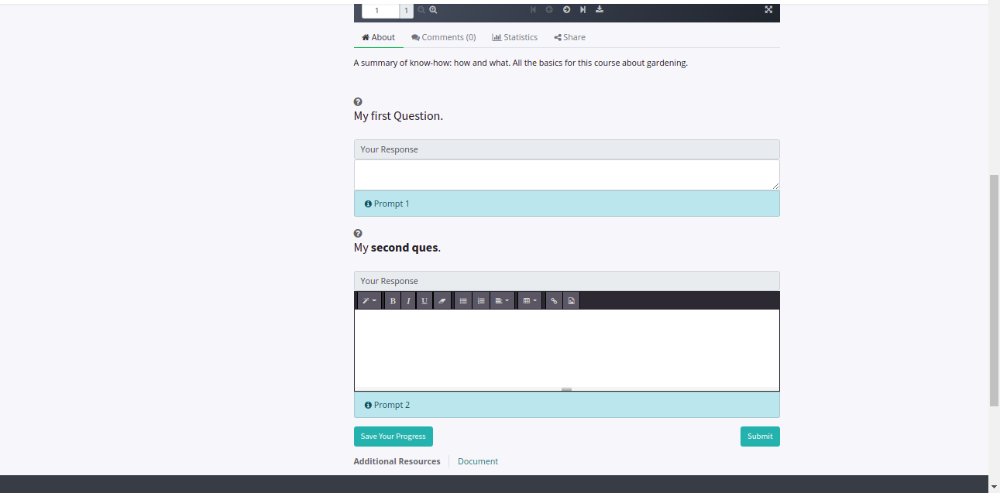
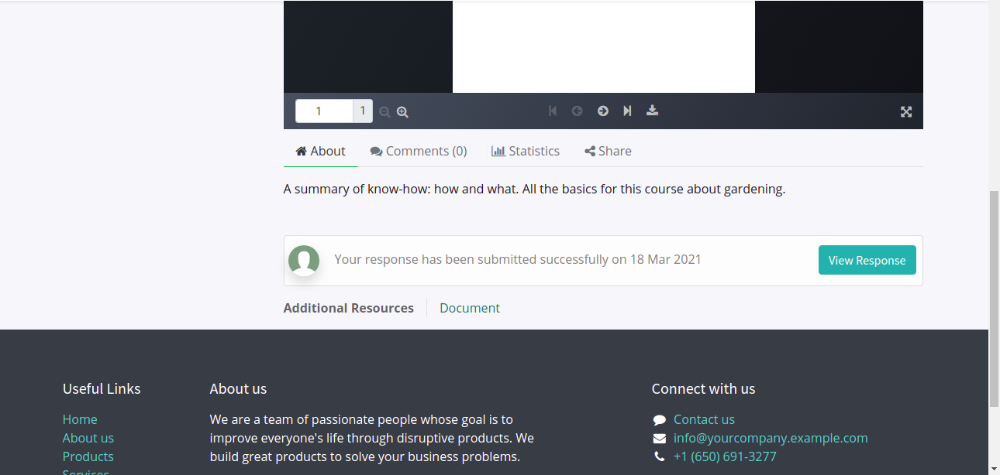
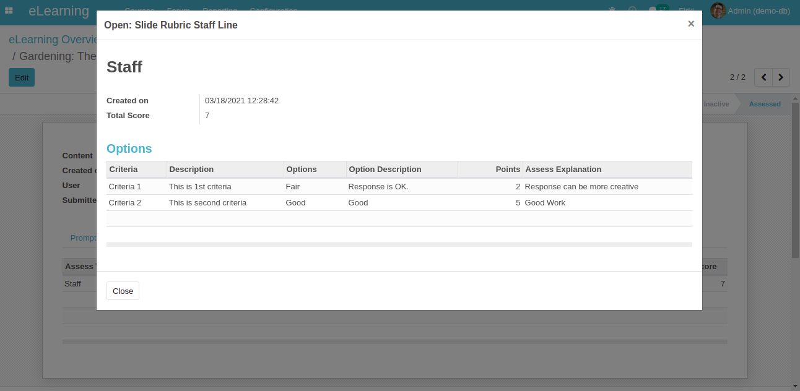
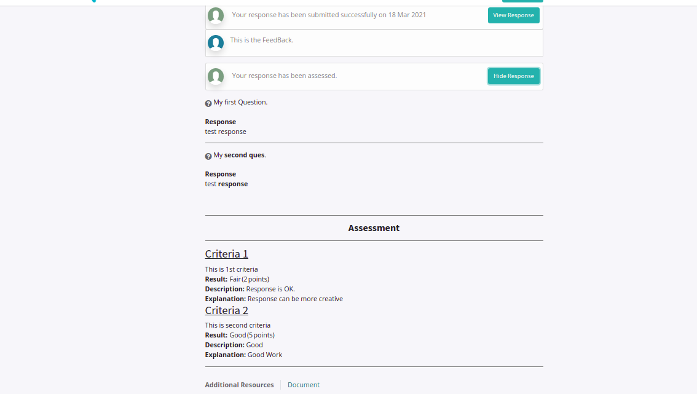
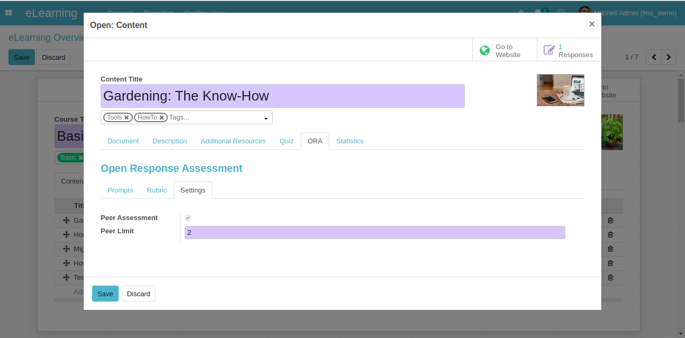
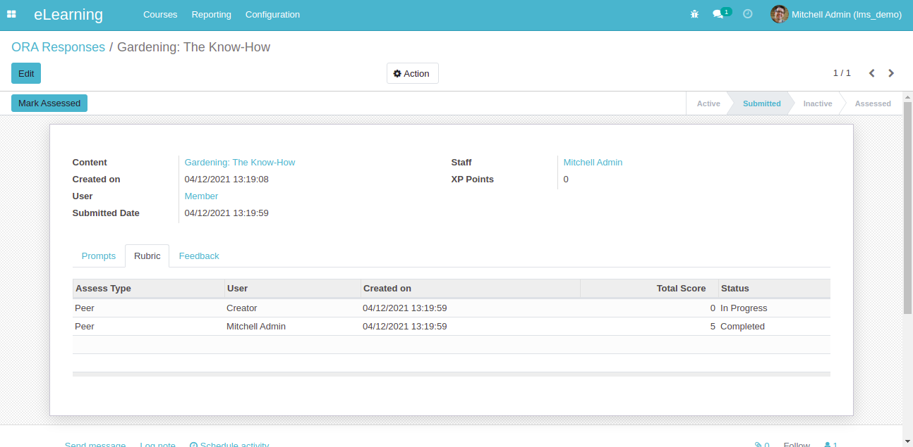
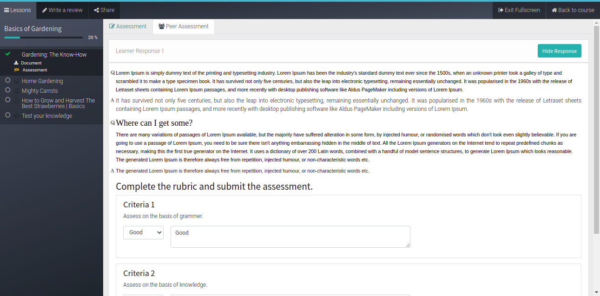
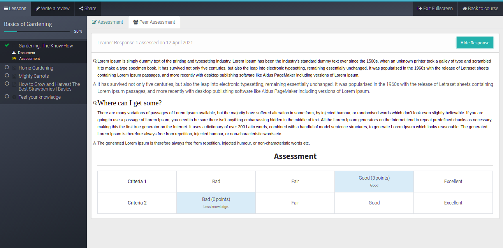

Screenshots
Create prompts that you want to ask from users.

Creator can define the criteria on which response will be assessed.

Learner answers the assessment directly from the course.

Once user submit the response it will be visible in cards.


Creator can assess the response from the response itself.

Once creator assesses the response learner can see what assessment he got and the xp points for it.

Enable/Disable peer assessment setting from the course.

Responses of learner will be automatically allocated to peers.

Learner can see the peer assessment once other learner response allocated to them.

Once learner submit the assessment. He/She can see the assessment in a table view.
